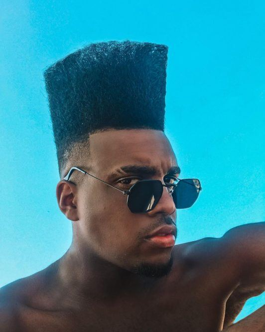

Home
Contato
Serviços
Black power
Cabelo afro puff masculino
Flat top
Mais
Corte afro 360 waves
Serviços
Flaptop

O estilo flat top ficou mais conhecido como corte da moda nas décadas de 80 e 90. Nele, as laterais são bem raspadas e o topo é alto e arrumado para criar um efeito geométrico e até mesmo quadrado, para parecer bem retinho.